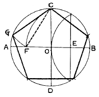
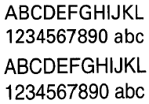

1과목: 색채학
1. 태양빛 아래서 모든색이 적절히 흡수반사가 일어났을 때 보이는 가장 가까운 물체의 표면색은?
2. 프리즘을 이용하여 가시 스펙트럼 색대를 발견한 사람은?
3. 오스트발트 표색계에서 완전색(순색)을 표시하는 기호는?
4. 다음 색 중 보색관계에 있지 않은 색은? (단, 20색상환에서)
5. 감법 혼색의 3원색이 아닌 것은?
6. 먼셀(A.H.Munsell)의 표색계(表色系)를 설명한 것 중 옳은 것은?
7. 색의 표시 5Y 9/14에서 명도는? (단, Munsell 표색계)
8. 다음 먼셀 색채기호 중 중성색인 연두색은?
9. 활동이 적고 오랜시간 머무는 방은 어떤색을 선택하는 것이 가장 좋은가?
10. 바탕색에 따라서 어떤색이 맑게 혹은 탁하게 느껴지는 것은?
11. 색의 온도감을 설명한 것 중 맞는 것은?
12. 다음색 중 연상작용에서 엄숙, 신비, 불안, 우월의 색감을 나타내는 색은?
13. 문· 스펜서의 색채조화론에 있어서 조화의 종류가 아닌 것은?
14. 적색에 백색을 가하면 핑크색으로 변한다. 이때 핑크색은 어떻게 되었다고 할 수 있는가?
15. 좁은 방을 시각적으로 넓고 시원하게 느껴지게 하려면 어느 배색이 가장 효과적인가?
16. C.H.M(Color Harmony Manual)은 누구의 색채조화이론을 바탕으로 한 것인가?
17. 한국산업규격의 안전 색채 사용 통칙에서 "위험"을 표시하는 기본색은?
18. 미술관이나 박물관내 전시물 진열대의 색채계획에서 가장 중점적으로 고려할 사항은?
19. 현색계(顯色系)에 관한 설명 중 틀린 것은?
20. 명도와 채도에 관한 수식어 중 가장 고채도를 나타내는 것은?
2과목: 인쇄 및 사진기법
21. 가독성이 뛰어나 서적이나 신문 등의 본문 서체로 널리 쓰이는 서체는?
22. 광원의 종류 중 파장 영역을 바르게 설명한 것은?
23. 구면수차를 이용하여 만든 초광각렌즈로 180° 또는 그 이상의 시야를 갖는 화상을 어떤 한정된 크기의 범위안에 마이너스의 왜곡을 갖게 결상시키는 렌즈는?
24. 황산바륨을 사용하지 않고 수지인 폴리에틸렌을 종이 베이스에 칠한 인화지는?
25. 인쇄의 5대 요소는 무엇인가?
26. 처음 찰영시 F번호를 8에 놓고 촬영하였다. 다른 조건은 그대로 두고 F번호를 11로 정정하면 밝기는 어떻게 되는가?
27. LB(light balancing)필터의 사용 목적을 구체적으로 설명한 것은?
28. 현상이 되지 않은 감광막 중에 남은 불필요한 할로겐화은을 용해, 제거하는 작업은?
29. 사진 감광재료인 필름의 감도를 나타내는 감광도의 표시방법으로 이용되지 않는 것은?
30. 사진에서 감색성이란?
31. 제책의 종류 중 실로 맨 속장을 다듬 절단하여 두꺼운 표지로 싸는 방식은?
32. 패닝(panning)에 대한 설명 중 틀린 것은?
33. 필름은 생김새에 따라 롤필름, 컷트필름, 필름팩 등으로 나눌 수 있는데 롤필름(Roll film)의 장점이 아닌 것은?
34. 컬러 사진에서 사람이나 동물의 눈이 붉게 나타나는 것을 방지하기 위한 방법은?
35. 카메라의 종류를 설명한 내용 중 맞는 것은?
36. 인화된 사진이 전체적으로 어둡고 특히 그늘 부분의 질감과 디테일이 상실되었다면 가장 큰 이유는?
37. 사진 필름을 현상하는데 사용되는 현상주약이 아닌 것은?
38. 인화지의 포장에 DW(Double Weight)라는 표기가 있다. 무슨 기호인가?
39. 정착액의 주성분은?
40. 필름 유제층에 입사한 빛의 일부가 유제층 안에서 반사 또는 굴절하여 화상의 선명도를 낮추는 현상은?
3과목: 시각디자인론
41. 다음 그림에서 지각되는 착시는?
42. 입체에 대한 설명 중 부적합한 것은?
43. 도면의 크기 중 A1의 크기는?
44. 1920년대 중반부터 새로운 국제적인 디자인 운동이 형성되기 시작한 모더니즘 운동은 건축분야에 큰 영향을 끼치며, 차츰 디자인 전반에 걸쳐 그 영향력을 발휘했다. 다음 모더니즘의 설명 중 틀린 것은?
45. 일정한 질서 체계에 의해 형성되는 디자인 원리와 가장 거리가 먼 것은?
46. 우리나라 최초의 광고가 실렸던 신문은?
47. 디자인의 분류 중 2차원 시각디자인에 해당하는 것은?
48. 정원에 내접하는 정5각형 그리기 그림의 설명 중 잘못된 것은?

49. 물품의 보이지 않는 부분의 형상을 표시하는 선은?
50. 디자인이 수행해야 할 역할이 아닌 것은?
51. 디자인의 원리에 대한 설명 중 적합하지 않은 것은?
52. 시점의 높이가 대상물의 높이에 비해 상당히 높을 경우에 활용하는 투시법은?
53. 산업디자인 분야를 바르게 분류한 것은?
54. 다음 디자인의 사회적 기능에 관한 설명 중 비교적 가장 거리가 먼 것은?
55. 형태에 관한 시각의 기본 법칙에 대한 설명 중 적합하지 않은 것은?
56. 높은 가독성으로 유럽 전역에서 공공 신호체계용 서체로 활용되었으며 1950년대에 전 세계적으로 널리 사용된 대표적인 두 가지 서체는?

57. 미국에서 곡선적 유선형 디자인이 유행하기 시작한 시대는?
58. 제품판매를 위한 마케팅 믹스의 통제 가능한 구성요소는?
59. 아르누보에 대한 설명 중 맞지 않은 것은?
60. 1880년대부터 수많은 디자이너들이 산업혁명에 따른 기계문명의 출현을 앞두고 그것이 인간의 생존에 해로운 것이라고 단정하고 맹렬하게 저항한 운동은?
4과목: 시각디자인실무 이론
61. 전단(傳單)보다 고급스러운 것으로 핸드빌 이라고도 하며 낱장으로 되어 있는 광고매체는?
62. 기업의 커뮤니케이션 행동은 ① 내부적 유통 ② 정보유입 ③ 외부로 정보방출 등 크게 3가지가 있다. 이 중 세 번째에 해당되는 대사회적 커뮤니케이션 메시지 방출의 표현내용이 아닌 것은?
63. 동기부여 이론에서 인간욕구 5단계(①생리적 욕구, ②안전, ③사회적욕구 ④존경의 욕구 ⑤자아 실현의 욕구)를 주창한 사람은?
64. 포장디자인의 1차적 기능을 가장 바르게 나열한 것은?
65. 그림에 의한 시각적 언어는 다른 어느 커뮤니케이션 도구보다도 효과적으로 정보를 전달할 수 있다. 시각적 구성에서 조형의 원리가 아닌 것은?
66. 컬러 인쇄의 4 원색은?
67. 소형자동차의 통행량을 알아보기 위해 가장 알맞은 시장조사 방법은?
68. 오늘날 캘린더에 대한 설명 중 가장 올바른 것은?
69. 옥외 사인의 종류와 기능을 바르게 연결한 것은?
70. 신상품 계획 단계에서 이루어 지는 내용과 거리가 먼 것은?
71. 그래픽 심볼이 가져야 할 일반적인 조건이 아닌 것은?
72. 주로 기업 및 제품을 소개하기 위한 용도로서 일정한 분량과 내용을 가지고 활용되는 매체는?
73. 다음 중 메시지 전달이 아닌 시각적 자극을 통한 대중 심리와 연결되어 있는 그대로의 반응을 유도하는 것을 목적으로 하는 포스터는?
74. 백화점에서 고객의 라이프 스타일을 조사하고자 할 때, 먼저 지리적 특성을 세분화 하여야 하는데 그 구체적인 예는?
75. 기업이미지 조사 중 내부환경 조사의 항목과 거리가 먼 것은?
76. 한글은 좌우구조, 복합구조, 좌우 받침구조, 복합 받침구조로 되어 있다. 다음 중 복합구조는?
77. 소비자의 구매행동 순서를 바르게 나열한 것은?
78. 다음 중 포장디자인 개발 시기가 부적절 한 것은?
79. 잡지광고의 장점에 관한 설명 중 틀린 것은?
80. 애니메이션(animation)에 관한 내용 중 잘못 설명된 것은?